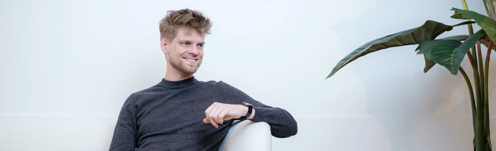

I'm a technologist with decades of experience in the technology industry. I've embraced various roles ranging from engineer and architect to management positions in software development agencies and technical due diligence for investors
I cherish my kids and marriage, savor fresh coffee flavors, and perform live electronic music. I'm exploring the meaning of health span through nutrition and exercise. Aside from all that, I'm an avid note maker and I research all sorts of security, software and hardware topics.
